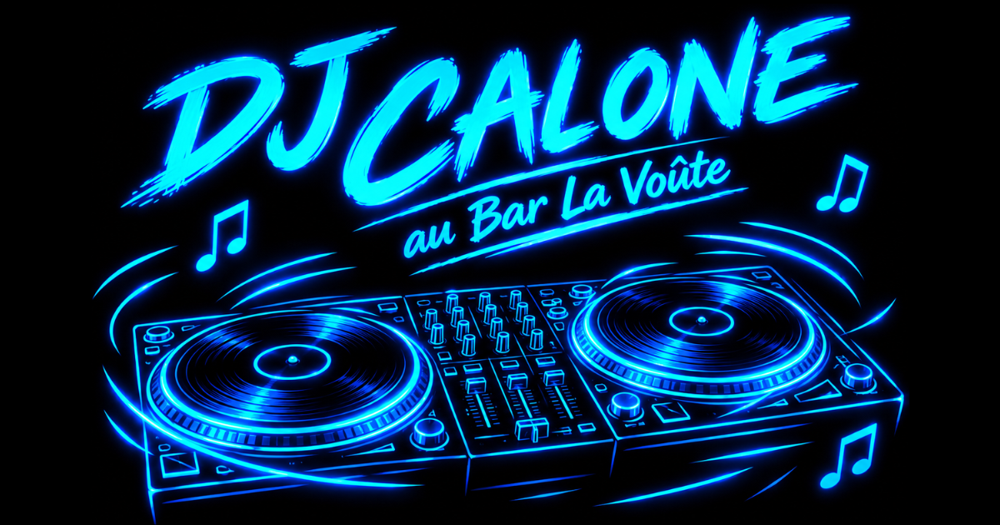
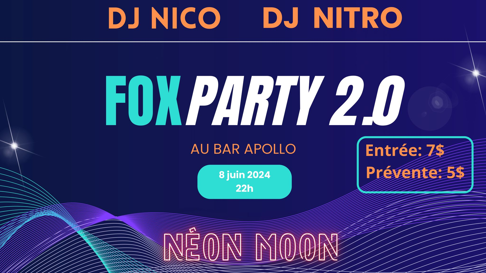
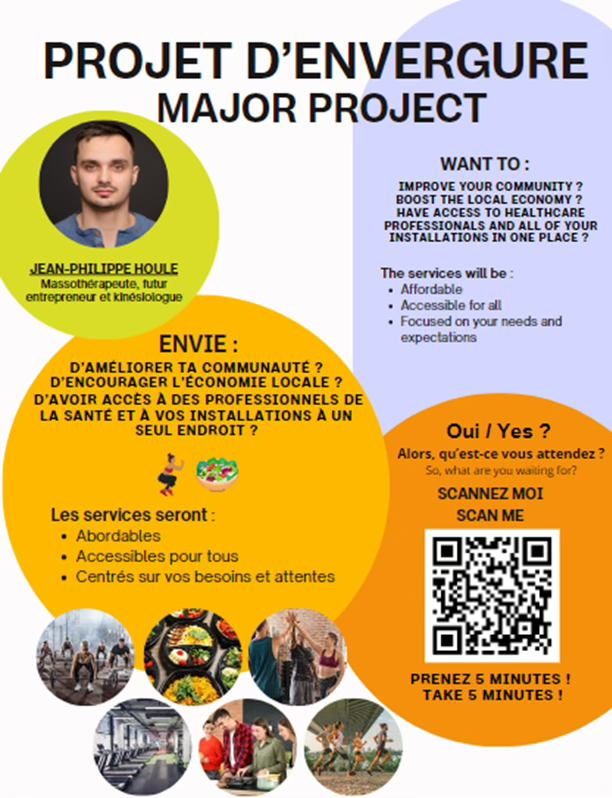
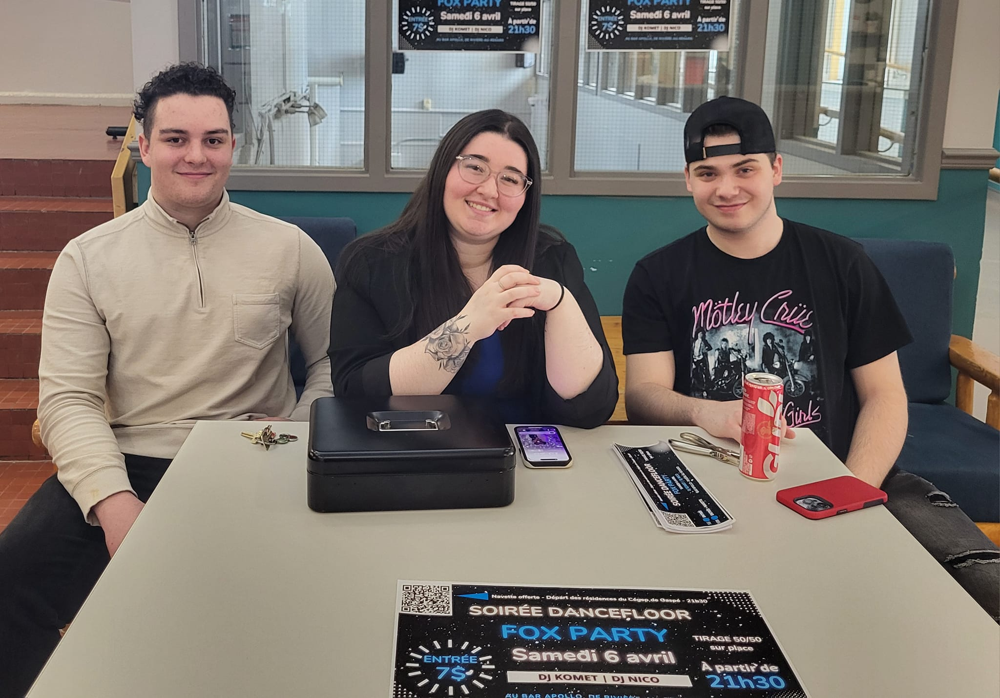
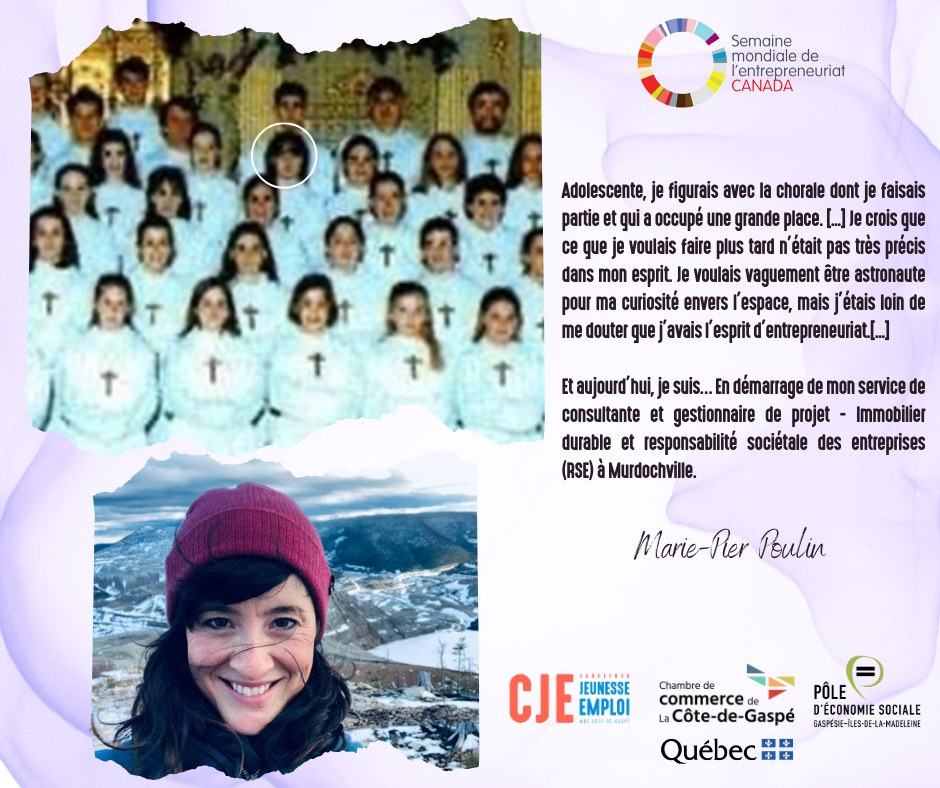
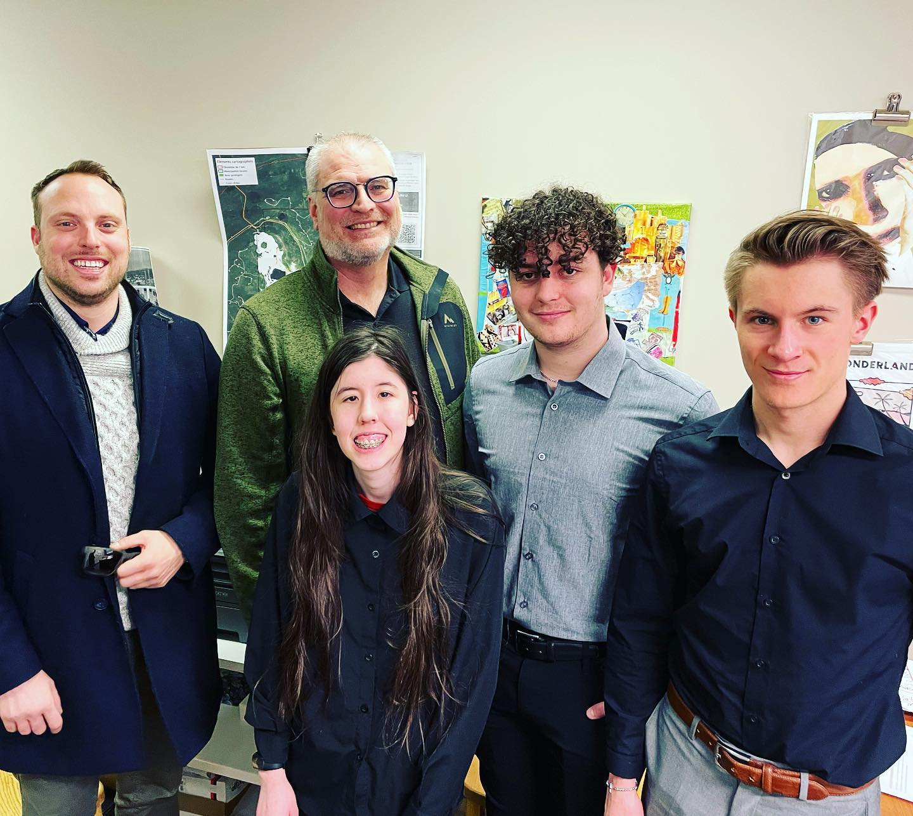
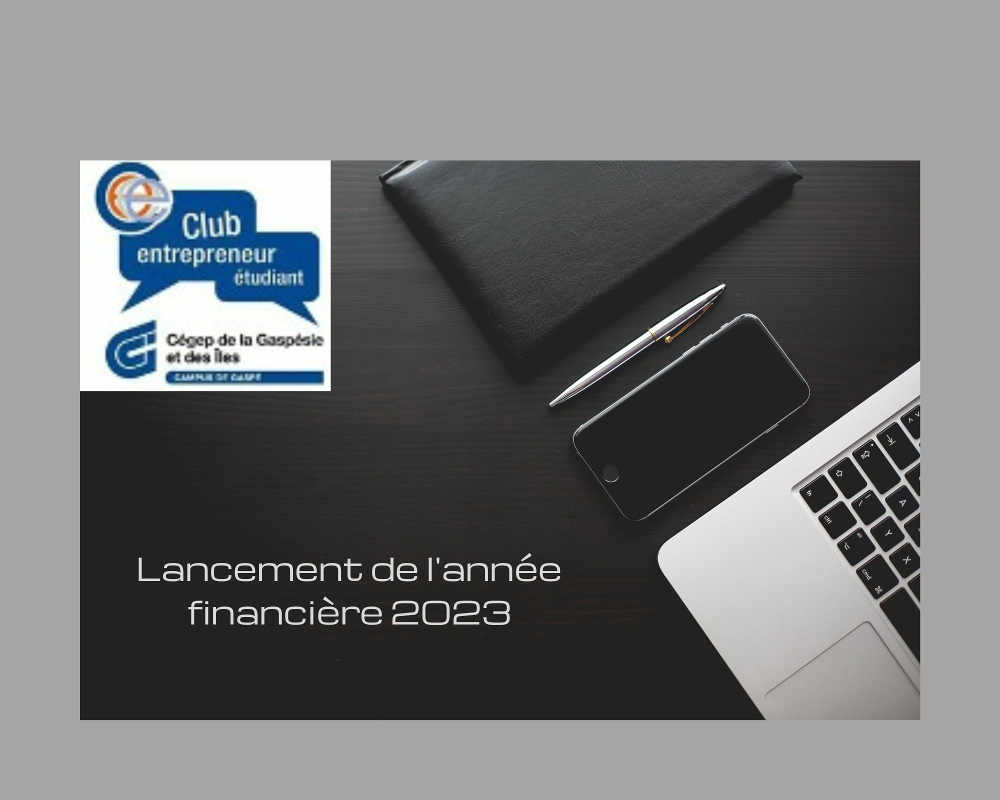

DJ Calone au Festif 2026-09-19 à 22h
Venez découvrir DJ Calone à La Voûte ce samedi 19 septembre à 22 h !

Les actualités du Club, de 2022 à aujourd’hui. Pour les nouvelles les plus récentes, suivez-nous sur Facebook et Instagram (@ceegim).

Venez découvrir DJ Calone à La Voûte ce samedi 19 septembre à 22 h !

🎉🍹 Soirée au Bar Apollo de Rivière-au-Renard ! 🍹🎉
Salut tout le monde !
Vous cherchez une soirée cool à ne pas manquer ? On a ce qu’il vous faut ! Venez briller avec nous au Bar Apollo de Rivière-au-Renard pour notre soirée Neon Moon ! Alors, prêts à faire la fête avec nous ?
À très bientôt !

Le Club Entrepreneur Étudiant de Gaspé célèbre la réussite exceptionnelle de ses membres lors du récent gala des finissants, notamment Félix Larivière, Jordan Dunn, Dia Djeinabou et Josianne Cyr-Duguay, qui se sont distingués en remportant des bourses prestigieuses.
Félix Larivière a brillé en recevant non pas une, mais deux bourses : une en immersion anglaise et une autre en adventure tourism. Son engagement dans ces domaines prometteurs témoigne de son désir d’explorer de nouveaux horizons.
Jordan Dunn s’est vu décerner la bourse en comptabilité et gestion, récompensant ainsi son excellence académique et son engagement dans le domaine de l’administration.
Dia Djeinabou a été récompensée pour son excellence en anglais langue seconde, une compétence essentielle dans un monde de plus en plus connecté. Son dévouement à perfectionner ses compétences linguistiques ouvre la voie à de nombreuses opportunités professionnelles à l’échelle internationale.
Enfin, Josianne Cyr-Duguay a été honorée pour son dépassement de soi, une qualité essentielle pour tout futur entrepreneur.
Ces quatre lauréats incarnent l’excellence et le dynamisme de la relève entrepreneuriale de Gaspé. Leur succès au sein du Club Entrepreneur Étudiant démontre leur capacité à transformer les défis en opportunités et à poursuivre leurs rêves avec passion et détermination.
Félicitations à Félix Larivière, Jordan Dunn, Dia Djeinabou et Josianne Cyr-Duguay pour cette reconnaissance bien méritée. Leur parcours illustre parfaitement l’esprit d’innovation et d’audace qui caractérise le Club Entrepreneur Étudiant de Gaspé, et nous sommes impatients de voir les réalisations futures de ces jeunes leaders inspirants.


Le Club Entrepreneur étudiant est heureux de vous annoncer le projet de notre ami Jean-Philippe. Récemment diplômé en massothérapie et kinésiologie, Jean-Philippe envisage de s’établir dans la région de Gaspé, où le sport et les activités en plein air font partie intégrante du mode de vie local. Son objectif ? Créer son propre centre de conditionnement physique, doté d’installations modernes et accueillantes, offrant une gamme complète de services de massothérapie et de kinésiologie de première qualité, adaptés à vos besoins.
Dans le cadre d’une étude de marché visant à évaluer la faisabilité de ce projet, nous vous invitons à consacrer 5 minutes de votre temps pour remplir le questionnaire.


Un grand merci à CEE UQAR – Campus Rimouski de nous avoir accueillis dans leur simulation boursière. Malgré la fatigue, ce fut un événement très intéressant qui nous a permis d’acquérir de nouvelles compétences dans le domaine boursier et d’en savoir plus sur ce qui est bon ou mauvais à faire. Un grand merci aussi aux gens qui étaient là pour nous donner d’excellents conseils sur nos investissements.
Venez encourager les Bleus Marins de Gaspé pour leur finale de ligue de volleyball ce dimanche. Par la suite, nos deux nouveaux DJ feront un petit show lors de la tailgate party de 13h30 à 15h30. On vous attend en grand nombre ! 🏐
Le Club entrepreneur étudiant de Gaspé souhaite à tous et à toutes une année riche en réussites, collaborations fructueuses et projets innovants. Que 2024 soit synonyme de prospérité et d’épanouissement pour chacun d’entre vous. Bonne année! 🥳
🌲🎁 Le Club Entrepreneur étudiant de Gaspé vous souhaite un Noël éclatant de joie, de succès et de rencontres inspirantes! Que cette période festive vous comble de bonheur et de réussite. Joyeuses fêtes à tous!
Ce vendredi à partir de 21h30, rejoignez-nous au Bar Apollo pour soutenir nos jeunes talents Emy Dumaresq et Tristan Gauthier lors de leur premier show de bar en musique ! 🎶 Ambiance réservée aux 18 ans et plus. Venez vivre une soirée mémorable dans une atmosphère chaleureuse. Tout le monde est le bienvenu à cette soirée inoubliable ! 🕺💃

Le Programme Boutique soutient les membres du CEEGIM dans la conception, le lancement et la gestion de boutiques locales. En mettant l’accent sur le commerce de détail, ce programme offre aux participants une plateforme pour développer leurs compétences en matière de gestion d’entreprise, de marketing et de relation client. En encourageant le commerce local et l’artisanat, il contribue à dynamiser l’économie locale et à renforcer le tissu social de la communauté.
Événement d’ouverture : explorez l’univers visuel de Félix Larivière Photos, photographe exceptionnel du Club Entrepreneur de Gaspé! 📸✨ Venez le voir les 6 et 7 décembre de 11:30 à 13:00 au Cégep de Gaspé pour acquérir ses superbes photos. Cette initiative vise à soutenir Félix dans ses projets de photographie. Encouragez l’art local et la passion photographique!

Découvrez notre Programme d’Éducation Financière (PEF) conçu spécialement pour les étudiants, avec une attention particulière pour les étudiants internationaux.
Notre objectif est simple : apprendre aux étudiants des compétences cruciales en gestion financière personnelle. Le PEF offre des opportunités tangibles pour favoriser une gestion financière et fiscale saine.
Le PEF se déploie à travers trois ateliers, présentés de manière séquentielle au cours de chaque session scolaire :
1 – Conférence « Mes Finances 101 »
2 – Atelier « Mon Budget et mes Outils »
3 – Atelier « Faire mes Impôts »
Nous vous invitons chaleureusement à notre présentation prévue le 16 novembre 2023 : « Rejoignez-nous à la conférence Mes Finances 101! »
Le Club Entrepreneur Étudiant, en partenariat avec Desjardins, inaugure son programme d’éducation financière étudiante. Apprenez les ficelles de la gestion de l’argent, les secrets de l’investissement judicieux, la maîtrise de la dette et les astuces d’une budgétisation experte. C’est l’occasion parfaite pour transformer l’argent en votre allié dans l’économie actuelle. Des prix de présence seront tirés en cours d’événement !

Découvrez cette belle initiative du Carrefour Jeunesse-Emploi Gaspé dans le cadre de la Semaine mondiale de l’entrepreneuriat 2023 !

Le club entrepreneur étudiant de Gaspé est fier de vous présenter ses membres pour l’année 2023-2024 :
Président – Jordan Dunn
Vice-présidente, Finances – Dia Djeinabou
Vice-présidente, Technologie marketing et secrétaire – Josianne Cyr-Duguay
Vice-président, Marketing – Zacharie Comeau
Vice-président, Sûreté – Louis-Thomas Roy
Apprentie des technologies – Cassie Rémillard
Photographe – Félix Larivière
Messagère – Marilou Côté
Membre – Carolane Côté
Membre – Emy Dumaresq
Membre – Maxim Chaput
Membre – Nicolas Travers
Membre – Raphaël O’Connor
Membre – Thomas Whitty
Ressource – Adam Normand
Ressource – Éric Guenette
À noter qu’il n’y a malheureusement pas tout le monde sur la photo, mais nous formons une belle équipe cette année pour réaliser de nombreux projets formidables pour toute la communauté de Gaspé.
Le CEEGIM a participé au Colloque 2023 (CLQ 2023), un congrès organisé par l’Association des clubs entrepreneurs étudiants du Québec (ACEE), qui a eu lieu à Drummondville du 3 au 5 novembre 2023.
Durant cet événement réunissant des étudiants postsecondaires des quatre coins du Québec, nos membres se sont inspirés d’une programmation qui démontrait qu’entreprendre, c’est aussi développer un projet, apporter une solution, créer de la valeur, faire une différence.
À travers des conférences et des ateliers, des expert(e)s nous ont menés à nous poser des questions sur différents sujets comme la diversité, l’économie circulaire, l’entrepreneuriat durable ou le repreneuriat.
Nous avons découvert différents modèles d’affaires, avenues entrepreneuriales et valeurs dans l’entrepreneuriat moderne, afin d’inspirer le développement de nos programmes à venir pour Gaspé, soit la communauté du cégep, des entreprises locales et bien plus.

Nous tenons à exprimer notre gratitude à Marie-Claude Brière de la Chambre de commerce de La Côte-de-Gaspé pour la réunion productive que nous avons eue aujourd’hui. Votre soutien continu est très apprécié par notre club d’entrepreneurs étudiants. Nous avons hâte de travailler ensemble pour soutenir l’entrepreneuriat dans notre communauté locale.

Le Programme Festif encourage la créativité et l’organisation d’événements festifs au sein de la communauté locale. Il offre aux membres du CEEGIM la possibilité de planifier et d’exécuter des événements dynamiques et engageants, favorisant ainsi le renforcement des liens sociaux et culturels.
Événement d’ouverture : Soirée Dancefloor ‼️🕺💃
Vous cherchez une activité à faire cette semaine ? Venez danser avec nous, ce jeudi 10 novembre, à partir de 21h au bar La Voûte. Cet évènement de financement sera au profit du Club Entrepreneur du Cégep de Gaspé. Venez en grand nombre!

Le CEEGIM a participé au Colloque 2022 (CLQ 2022), un congrès organisé par l’Association des clubs entrepreneurs étudiants du Québec (ACEE), qui a eu lieu à Drummondville du 4 au 6 novembre 2022.
Durant cet événement de trois jours réunissant des étudiants postsecondaires des quatre coins du Québec, nos membres se sont inspirés d’une programmation qui démontrait qu’entreprendre, c’est aussi développer un projet, apporter une solution, créer de la valeur, faire une différence.
À travers des conférences et des ateliers, des expert(e)s nous ont menés à nous poser des questions sur différents sujets comme la diversité, l’économie circulaire, l’entrepreneuriat durable ou le repreneuriat.


⭐️ Le conseil 2022-2023 ⭐️